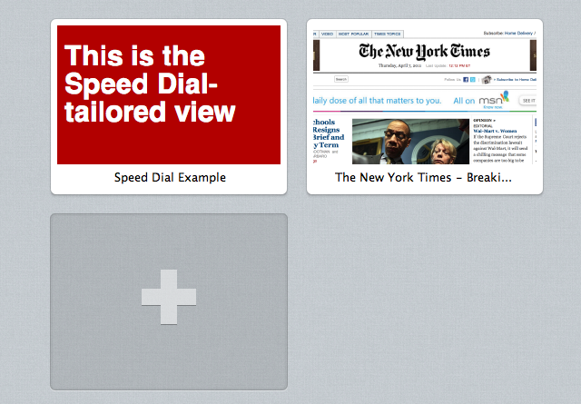

Выделите свой сайт в Экспресс-панели
The mechanisms to optimize Speed Dial icons covered in this article are only supported in Opera 11.10 to 12.16, and do not work in Opera 15 and later.
Table of Contents
- Введение
- Логотип
- Экспресс-панель с учетом содержимого
- Система приоритетов
- Поддержка в продуктах Opera
Введение
Настольная версия браузера Opera, начиная с версии 11.10, позволяет владельцам сайтов определять, как их сайт будет отображаться в миниатюрах Экспресс-панели. По-умолчанию, для отображения используется скриншот целой веб-страницы. Теперь появилась возможность указывать значок через CSS или в теле веб-страницы.
Логотип
Этот раздел посвящен тому, как использовать собственный логотип или значок в Экспресс-панели.
Значки в HTML5
Вы, возможно, знакомы со значками закладок. Впервые они были представлены в 5-й версии Internet Explorer в 1999 году. Хотя, они и не были включены в спецификацию HTML4, производители браузеров в конце концов согласились включить поддержку значков как значение атрибута rel элемента <link>. Компания Apple позже расширила поддержку значков в своих сенсорных устройствах через apple-touch-icon. Согласно спецификации HTML5, в настоящее время icon является валидным стандартизированным значением атрибута rel.
Объявление значка для Экспресс-панели
Объявление значка для Экспресс-панели во многом схоже с объявлением значка сайта. Необходимо лишь добавить элемент <link> в секцию head веб-страницы:
<head>
<title>My Opera</title>
<link rel="icon" type="image/png" href="http://path/to/logo.png">
</head>Значок для Экспресс-панели должен быть:
- Размером минимум 114 × 114 пикселов. Значки меньшего размера будут игнорироваться;
- файл должен быть формата PNG, JPG или GIF. Файлы формата SVG пока не поддерживаются. В случае использования анимированных изображений, будет отображаться только первый кадр.
По-умолчанию, максимальный размер значка составляет 256 × 160 пикселов. Значки большего размера будут уменьшены до подходящих размеров (демо). Изменить значения по-умолчанию минимального и максимального размера значка можно в меню настроек браузера в opera:config.
Также Opera 11.10 поддерживает apple-touch-icon, apple-touch-icon-precomposed и image_src.
Использование нескольких значков
Вы также можете указать несколько иконок. Это очень удобно, если хотите, чтоб пользователь использовал одну иконку при добавлении страницы в закладки, а другую при добавлении сайта в Экспресс-панель.
<head>
<title>My Opera</title>
<link rel="icon" type="image/png" href="http://path/to/128x128image.png">
<!-- Это будет иконка Экспресс-панели -->
<link rel="icon" type="image/png" href="http://path/to/200x200image.png">
</head>Если объявить несколько значков, на Экспресс-панели будет отображаться больший по размеру (демо). Если значки одинакового размера, использоваться будет тот, который объявлен первым (демо).
Экспресс-панель с учетом содержимого
Данный раздел описывает несколько новых способов получения содержимого для Экспресс-панели:
- Использование
view-mode:minimizedв CSS; - испольхзование HTTP-заголовка
X-Purpose; - автоматическая перезагрузка.
Использование view-mode:minimized

Рисунок 1: Экспресс-панель в Opera 11.10
Параметр view-mode определяет то, как будет указываться стили в зависимости от режима просмотра. Используя view-mode:minimized, вы можете определять альтернативные стили отображения содержимого, предназначенного для Экспресс-панели. Свойство view-mode работает аналогично device-width. Стили должны содержаться в блоке @media.
@media screen and (view-mode: minimized) {
body {
color: #fff;
background: #b20000;
}
}Вы также можете подключить CSS-файл и выставить значение аттрибута media так:
<link rel=stylesheet type="text/css" href="minimizedstyles.css" media="(view-mode:minimized)">Пример с использованием view-mode:minimized здесь.
Помните, что view-mode:minimized переключает окно просмотра в Экспресс-панели на 256 × 160 пикселов.
Использование HTTP-заголовка X-Purpose
Также есть возможность использовать различные URL для Экспресс-панели, каждый запрос которой содержит дополнительный HTTP-заголовок X-Purpose: preview.
GET / HTTP/1.1
Host: www.bbc.co.uk/news
X-Purpose: preview
User-agent: Opera/9.80 (Macintosh; Intel Mac OS X 10.6.6; U; en) Presto/2.8.99 Version/11.10При обнаружении данного HTTP-заголовкка вы можете выбрать, какой URL будет использоваться, определить файлы, которые отправятся на Экспресс-панель, или вывести специально заготовленное для Экспресс-панели содержимое. Заметьте, что такого же эффекта не будет, когда пользователь перейдет на сайт из Экспресс-панели.
В примере ниже, мы используем директиву mod_rewrite сервера Apache для перенаправления всех запросов Экспресс-панели на адрес /preview.html (вам, возможно, захочется конкретизировать запросы в конкретной ситуации):
RewriteEngine On
RewriteCond %{HTTP:X-Purpose} ^preview$
RewriteRule ^(.*) /preview.htmlИли быть может вы предпочтёте использовать серверную обработку запросов на каком-либо языке. Ниже приведен пример на PHP:
<?php
if ($_SERVER['HTTP_X_PURPOSE'] == 'preview') {
// Send Speed Dial content
} else {
// Send regular content
}
?>Автообновление через определенный интервал
Чтобы сделать содержимое Экспресс-панели более динамичным, вы можете установить интервал для обновления, который будет использоваться после добавления сайта в Экспресс-панель. Это можно сделать двумя способами:
-
используя элемент
<meta>:<meta http-equiv="preview-refresh" content="3600">
-
возвращая HTTP-ответ
Preview-Refresh:Preview-Refresh:3600
Данный интервал указывается в секундах, т.е. значение 3600 будет равно 1 часу.
Система приоритетов
Приоритет в первую очередь отдается свойству view-mode:minimized в CSS. Если стили недоступны, браузер будет искать объявление значка для страницы. Если ничего не будет объявлено либо файл будет не доступен или поврежден, будет использоваться стандартный метод — добавление снимка целой страницы.
Поддержка в продуктах Opera
Пока эти улучшения доступны только для пользователей настольной версии браузера Opera.
Для справки
This article is licensed under a Creative Commons Attribution-Noncommercial-Share Alike 3.0 Unported license.
Comments
The forum archive of this article is still available on My Opera.
No new comments accepted.